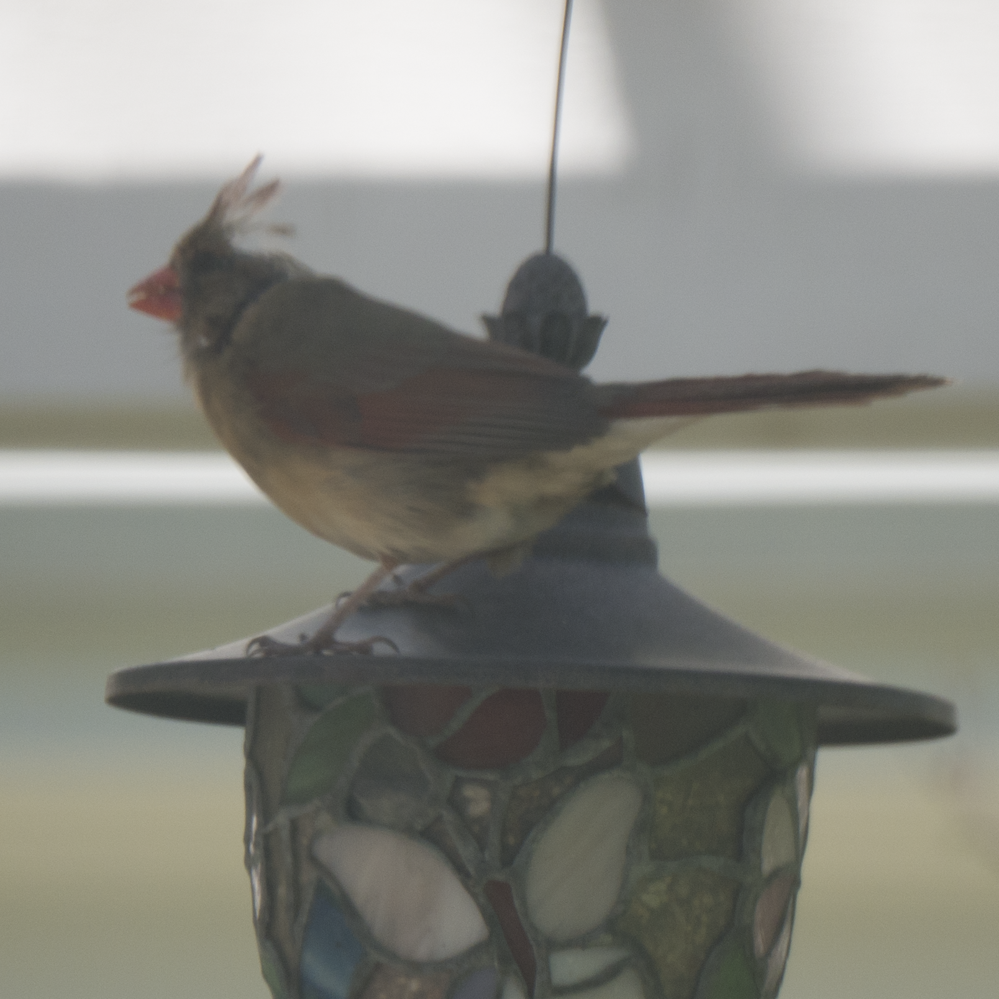
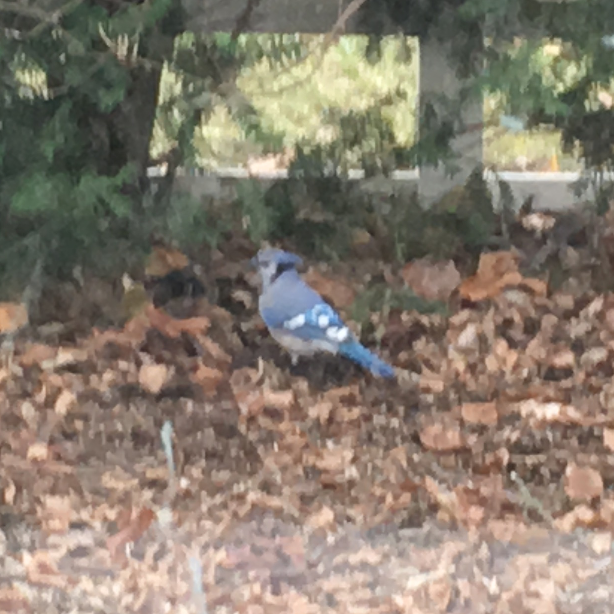

Other Colored Birds
Cardinal

Size:
8-9"
Diet:
Seeds, fruit, insects
Notes:
A beautiful bird I love to see. For a bit I went a bit hipster-ish on them and thought them overly popular, but these days I've come around to them. Their brilliant red plumage is especially wonderful in the winter contrasting against the snow. These birds can be seen year round!
Blue Jay

Size:
12"
Diet:
Seeds, fruit, insects, carrion, nuts
Notes:
A relative of crows and ravens, the blue jay is one of the most intelligent birds on the planet. Their blue feathers don't actually contain any blue pigment but use a complex nanostructure to scatter light and make blue just like the sky.